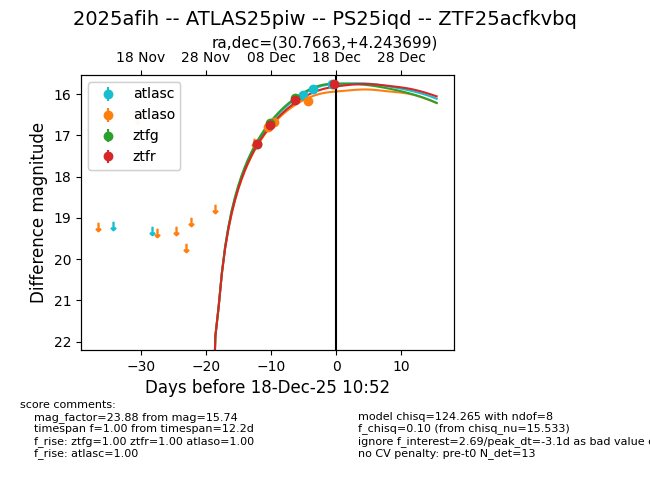
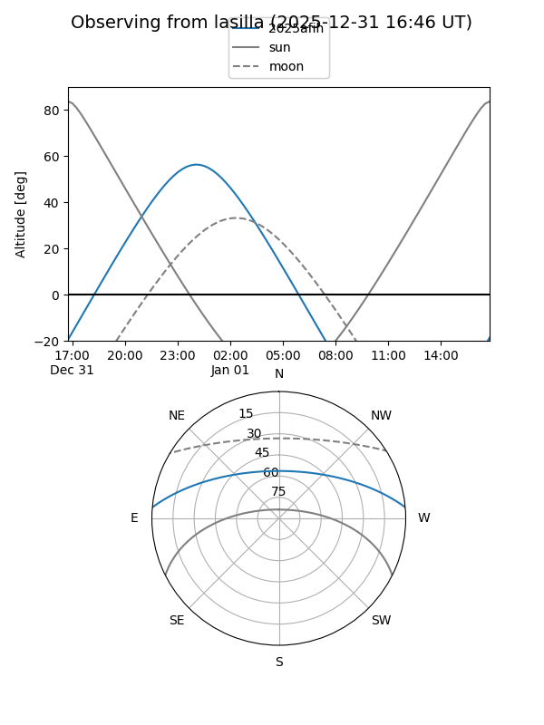
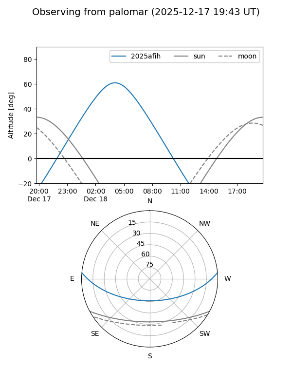
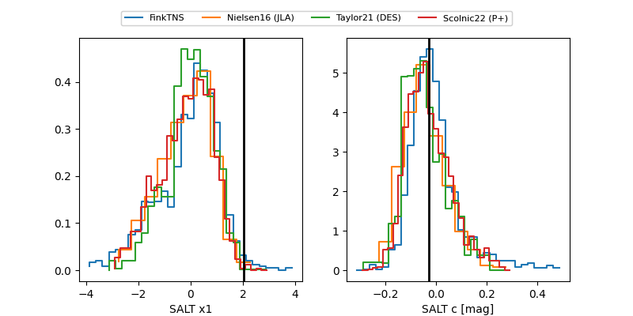

2025afih
Target 2025afih at 2025-12-18 11:52
Aliases and brokers:
FINK: fink-portal.org/ZTF25acfkvbq
Lasair: lasair-ztf.lsst.ac.uk/objects/ZTF25acfkvbq
ALeRCE: alerce.online/object/ZTF25acfkvbq
TNS: wis-tns.org/object/2025afih
YSE: ziggy.ucolick.org/yse/transient_detail/2025afih
alt names
ZTF25acfkvbq (ztf,fink_ztf)
2025afih (tns,yse)
ATLAS25piw (atlas)
PS25iqd (panstarrs)
Coordinates:
equatorial (ra, dec) = 30.7663,+4.24370
equatorial (HMS+DMS) = 02:03:03.91,+04:14:37.32
galactic (l, b) = (154.5243,-54.17524)
Photometry
last atlasc=15.75, atlaso=16.16, ztfg=15.77, ztfr=15.74
3 atlasc, 3 atlaso, 4 ztfg, 4 ztfr detections
Lightcurve

Visibility


Additional plots
